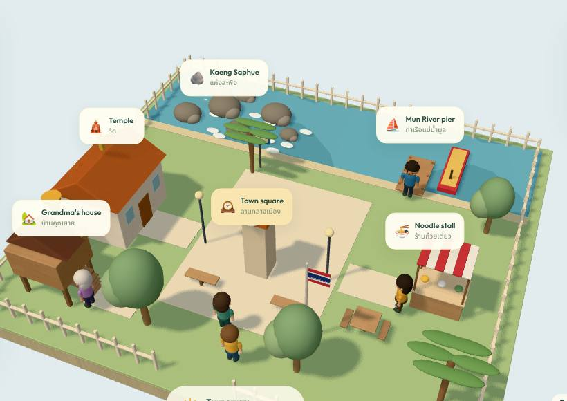
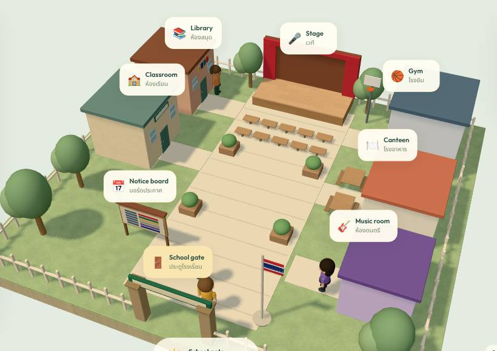

เรียนผ่านเรื่องราว
ทุกภารกิจมีเป้าหมายในโลก 3D เช่น พาเพื่อนชมโรงเรียน ซื้อของในตลาด ถามทางที่สถานีรถไฟ คำตอบที่ถูกตั้งแต่ครั้งแรกทำให้โลกเปลี่ยน
สำหรับครูและผู้บริหารโรงเรียน
SANOR QUEST เป็นเกมบนเว็บที่นักเรียนเดินสำรวจโลก 3D คุยกับตัวละคร ฟัง พูด อ่าน และเขียนภาษาอังกฤษเพื่อพาเรื่องราวไปข้างหน้า ระดับ CEFR A1–A2 เล่นบนมือถือของนักเรียนได้ ไม่ต้องติดตั้งแอป และครูเห็นความก้าวหน้าของทั้งห้องในแดชบอร์ดเดียว

ทุกภารกิจมีเป้าหมายในโลก 3D เช่น พาเพื่อนชมโรงเรียน ซื้อของในตลาด ถามทางที่สถานีรถไฟ คำตอบที่ถูกตั้งแต่ครั้งแรกทำให้โลกเปลี่ยน
ฟังเสียงตัวละคร (ปกติ/ช้า) เลือกและเรียงประโยค พูดออกเสียงโดยใช้ไมค์ตรวจหรืออัดแล้วฟังเอง และเขียนการ์ดสั้น ๆ ท้ายทุกภารกิจ
Starter มีคำแปลเต็ม · Explorer แปลเฉพาะคำใบ้ · Challenger ภาษาอังกฤษล้วน เกมแนะนำให้เลื่อนระดับเมื่อนักเรียนพร้อม และให้ตัวเลือกน้อยลงเมื่อนักเรียนพลาดหลายครั้ง
ระบบทบทวนคำแบบเว้นระยะ เลือกคำที่นักเรียนแต่ละคนพลาดมาให้ทบทวนก่อน จึงจำคำได้นานขึ้นโดยไม่ต้องเล่นซ้ำทั้งภารกิจ

เก็บเฉพาะเลขที่ ชื่อเล่น และผลการเล่น ไม่มีชื่อจริง อีเมล รูปถ่าย หรือไฟล์เสียงของนักเรียน นักเรียนกดลบข้อมูลของตัวเองได้ ตาม PDPA · นโยบายความเป็นส่วนตัว · แบบขอความยินยอมผู้ปกครอง
เปิดครั้งแรกเมื่อมีอินเทอร์เน็ต หลังจากนั้นเล่นออฟไลน์ได้ ผลการเล่นรอส่งเองเมื่อกลับมาออนไลน์ ภาพ 3D ปรับให้ลื่นบนมือถือราคาประหยัดโดยอัตโนมัติ
ตรวจตามมาตรฐานการเข้าถึง WCAG 2.1 AA ใช้แป้นพิมพ์อย่างเดียวได้ ลดการเคลื่อนไหวได้ และงานพูดมีทางเลือก "อัดแล้วฟังเอง" หรือข้าม สำหรับห้องที่เสียงดัง
อ่าน นโยบายความเป็นส่วนตัว แล้วส่ง แบบขอความยินยอม ถึงผู้ปกครอง
ที่ แดชบอร์ดครู ใช้อีเมลของครู ได้รหัสห้อง 6 ตัวต่อห้อง
เปิดเว็บนี้บนมือถือ กดเข้าห้อง ใส่รหัสห้อง เลขที่ ชื่อเล่น และ PIN 4 หลัก
ครูเปิดแบบทดสอบก่อนเรียนในแดชบอร์ด ใช้เวลาประมาณ 15 นาที
ตาม คู่มือครู ต้นคาบทบทวนคำที่ทั้งห้องพลาดบ่อย และให้ทบทวนประจำวันเป็นการบ้าน
เปิดแบบทดสอบหลังเรียน แล้วดูคะแนนที่เพิ่มขึ้นรายคนและทั้งห้องในแดชบอร์ด